~4 The Sub Menu Part One~
1/27/2025
To Get out of Clipping Region and bring back entire Scene
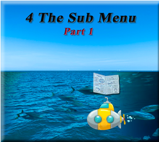
Not only are we bombarded all over the place with menus and panels in the Viewport section of the program, but Blender comes with two header menus, and it is that second header menu in which we are going to dive into now. Or Rather half of it, since this is a huge topic all on its own
Let’s begin with this first section of the menu
The First Section
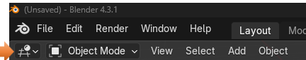
So, what is that first dropdown menu with the funny looking grid-like thing in it. If you click on that little arrow in it, you will find that you are presented with all different types of places in which we can go in Blender. These are not your main work modes, and so they were put off into their own little menu to be able to get to these lessor used places in the program. The 3D Viewport is taking a look at the entire interface of the program when you first open it, and it will be what we will be looking at here.
The 3D View Port
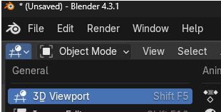
The 3D Viewport is the default view, it is what you come into when you first enter the program and it looks like this.
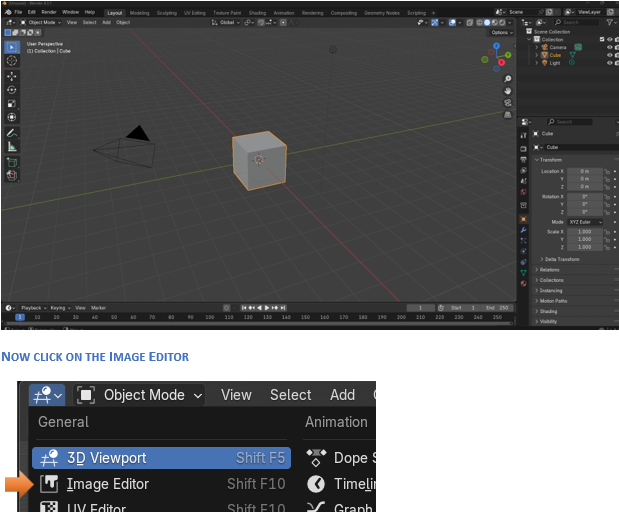
See, your viewport now is an image editor. So, click on this will shake things up just a bit
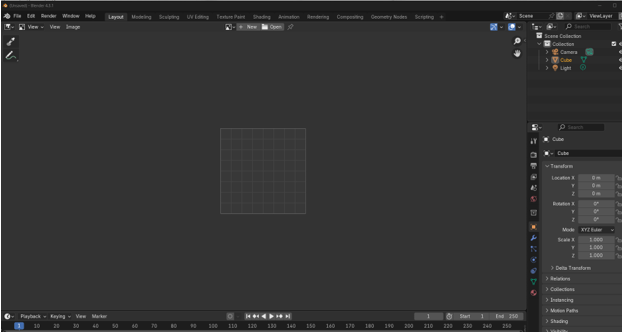
You can play with the different sections of this menu, and it will just take you to different places in Blender. You may or may not find this menu helpful for your own needs.
Just Remember how to get back to your original layout, is by clicking on that tiny little arrow at the top of the viewport and finding the first funny looking graph icon.
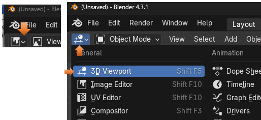
The Main Workspace Dropdown
Right now, we are in Object mode, but you can jump to anyone of these other main workspaces by using this next dropdown menu in the sub menu bar.
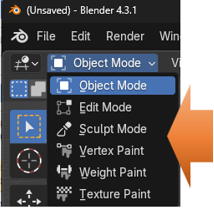The View Menu
This menu is pretty big and it allows you to do several different things in, and to the Viewport.
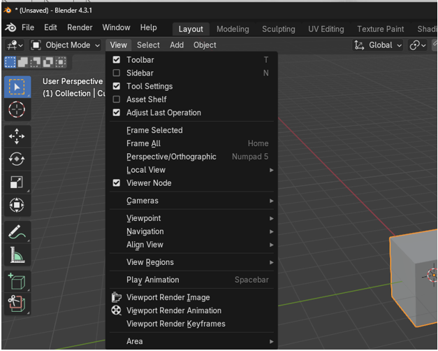
The first section of the view menu allows you to show or hide certain sections on the Viewport. You can choose to uncheck the Tool bar for instance and the toolbar on the left side of the viewport will disappear. Of course, just hitting the hot key of T, will do the same thing for you and toggle on or off viewing the tool bar.
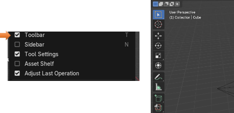
The Second section of the view menu, has to do with how you view the object. For instance, if you want to Frame all, then it will set all your object in the center of the viewport. If you want the object to be framed (Frame Selected) then it will zoom in on the object.
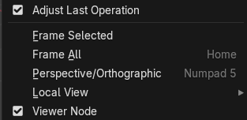
See how the Frame Selected option when selected, will zoom in on the object that you selected.
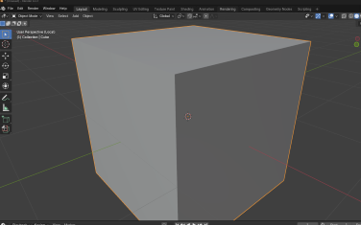
The third section of the view menu, has to do with setting cameras, viewing the object from different angles, navigating the viewport, Aligning the View, viewing Regions and playing animation.
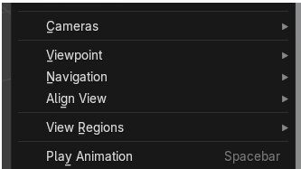
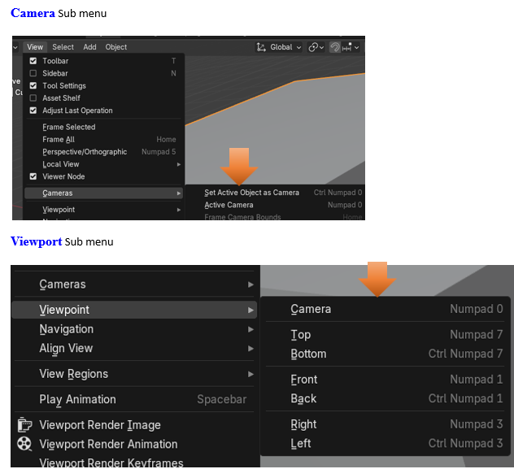
The Dolly view has to do with the camera, and the Fly and Walk navigation has to do with Animation.
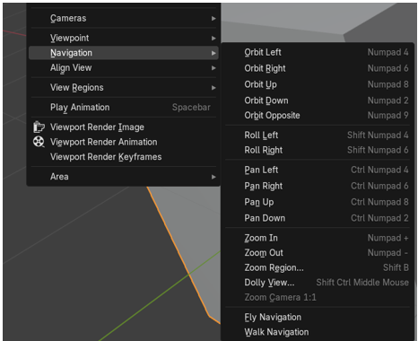
Align View Sub Menu
This has to do with aligning the view in the viewport, you even can align it inside of the camera. And also, there is an option to Center View to Cursor. You can choose the center of the scene by setting the cursor in the viewport anywhere you want (Center View to Cursor), and then have the view center around that. The cursor will not be viewed in the final product, but it will obey where the cursor is telling the objects to center around it.
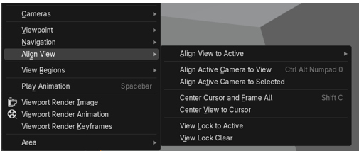
Here the View is set to Center View to Cursor
You see that the cursor is in the center of the scene.
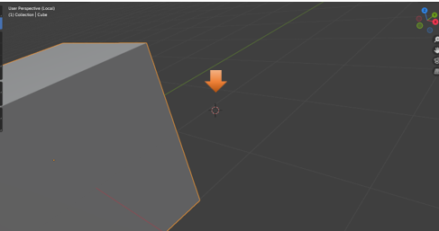
View Regions Sub Menu
How about Clipping Regions
Ok, now this one will bring up a dotted line where you can cut up what you want shown in the image. Just circle around a certain part of the scene and watch it slice and dice it up. Notice how the only section in which shows up in the scene is the section that was cut out with the dotted line box cutting tool you were given when clicking on the Clipping Regions section
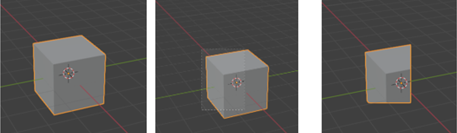
The next one shows which parts of the image, that you want rendered when you take a snapshot of it, with the render menu.
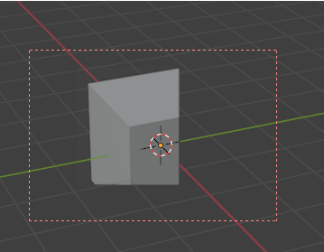
To Get out of Clipping Region and bring back entire Scene
Ok, to get out of this Clipping Region and to bring back the entire scene again, you must click on the hot key of alt-B. You could have used this hot key to start drawing your clipping section, but now you want to bring the entire thing back so click on alt-B to get your self out of this ridiculous mess, you have just sent yourself into.
Alt- B, see all better now
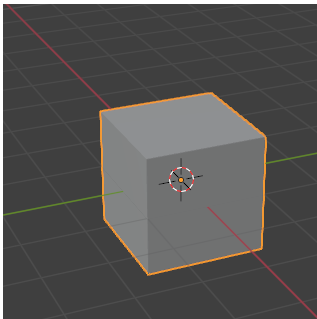
Play Animation
Ok, this does not have a sub menu but you can hit the spacebar, and if you have set up an animation for the scene, you will be able to play it.
The fourth section of the view menu
This section just enables you to take a snapshot of your view in either an image you can save to your hard drive or a video in a video format. This is called rendering your View. Rendering Keyframes enable you to just take a snapshot of key moments in your animation, without rendering out the full video.
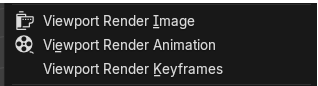
The last section of the view menu
This is an important section, as it enables you to slice, and dice up, the Viewport into smaller individual viewports where you can view your object at different angles at the same time. But you can actually do the same thing by hovering over the edges of the viewport and waiting for this same menu to come up where you can choose how to cut up the viewing area.
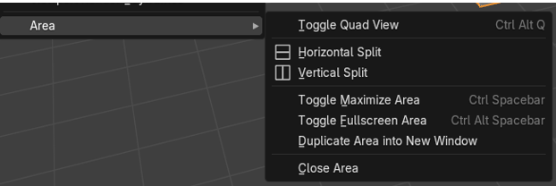
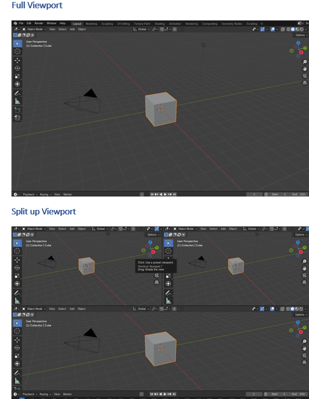
The Select Menu
This menu just gives you different options in how to select objects in your scene.
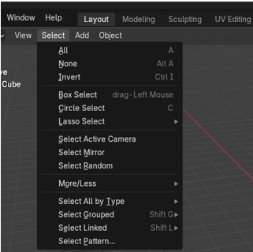
If you go into the sub menu here you will just find different ways in which you can select your object. The Select all by Type, enables to select certain types of objects in your scene.
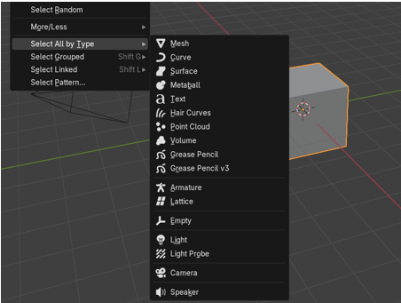
The Add Menu
We have worked with this menu before, and it is just a way in which we can add different types of objects to the scene. There are some submenus for some of these items, but it is best if you just go and explore them each on your own.
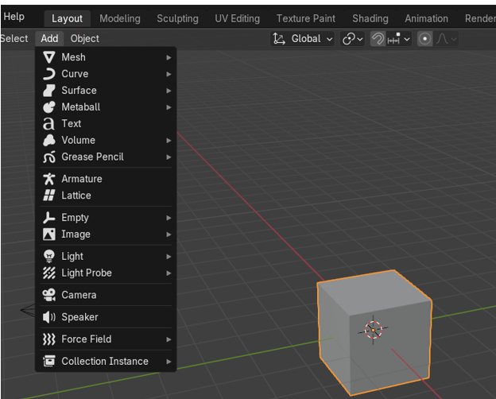
The Object Menu
The object menu is immense, and it has just about anything you want to do to an object such as duplicating, mirroring and a million other things. Just knowing that this menu is available to you, and you can get to all of these procedures that can be done to an object is enough, and to go into each and every one of these things in one tutorial would turn it into the size of a phone book, so I will just leave you with this menu at a glance here.
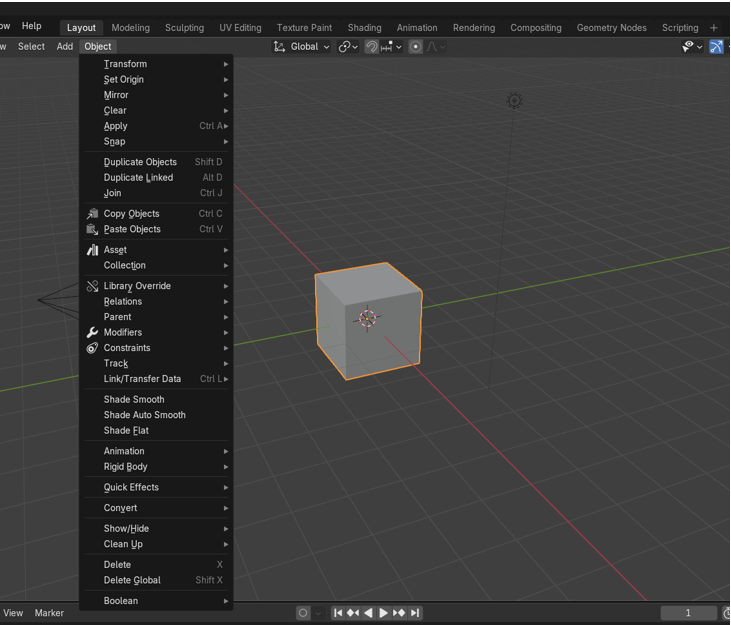
The Quick Effects Sub menu
I would like to touch on one very interesting menu item, and that is the Quick effects menu. This is near the bottom of the Object menu.
This is a fast way to apply some of the different effects that can be done in Blender
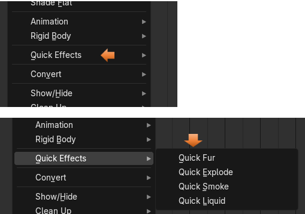
To help you view what is happening, we will need to have two additional panels open. In the right-side property panel open up the Modifier panel. Click on the wrench to open it.
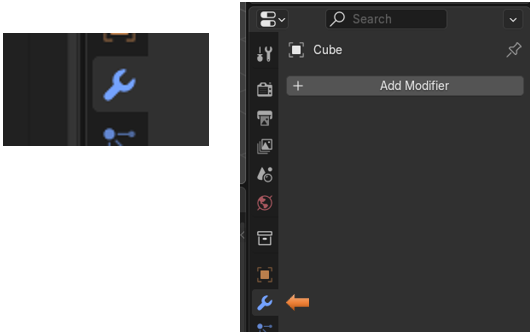
And we need to have the Animation panel at the bottom of the viewport opened up.
Hover over this part of the viewport here and wait for the double white arrow to show up, when it does drag the mouse upward to expose the Timeline used for the animation, which some of these effects will use.
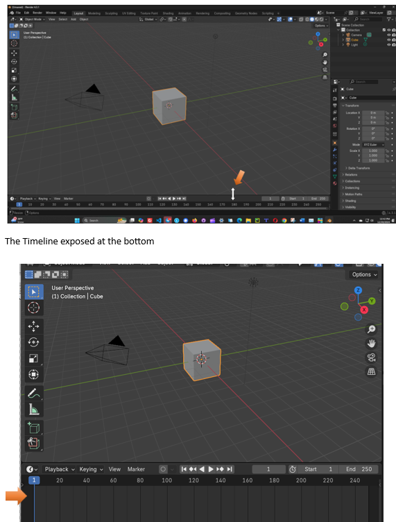
Now here we click on the Quick Fur. This does not need a time line unless you want to watch it grow.
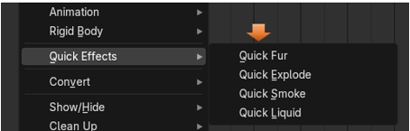
Look at what it has done to our cube, and also take a look at all of the stuff that was added to the Modifier Panel. We can use all of those options to fine tune how we want that fur to look. It added about 5 modifiers to the panel at the right.
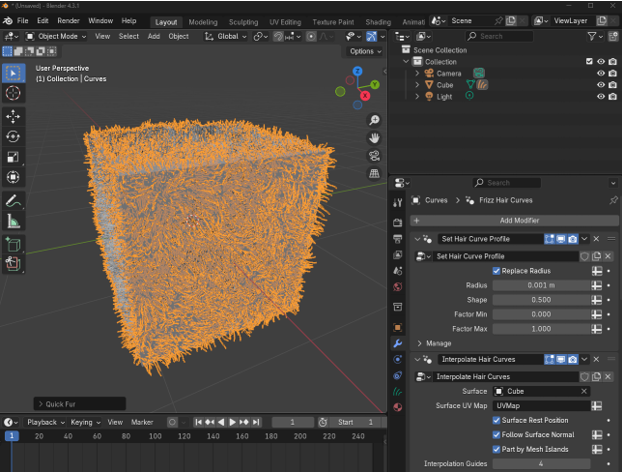
Remove a Modifier
You can Remove the Fur Modifier by clicking here.
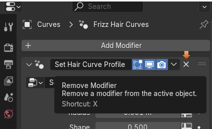
You will find that it has set up quite a few modifier to achieve this look on the cube. Just trying to remove each one individually will still leave the first modifier, so to get back to the way it was, you might try going to the Edit menu and going into the Undo History sub menu to get back to the way things were.
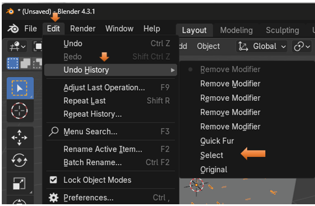
All better
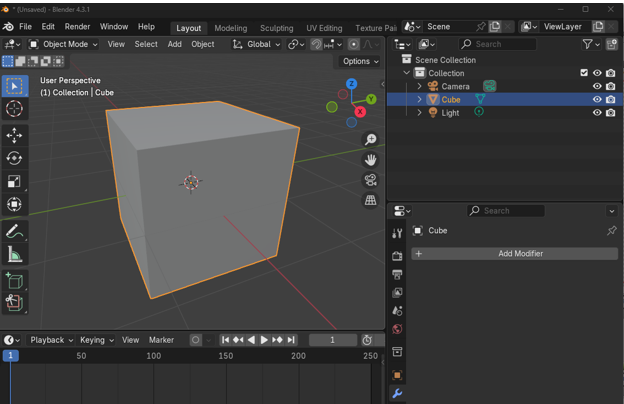The Quick Explode
Ok, this one will be using the time line to view the explosion, and it is why we brought it up.
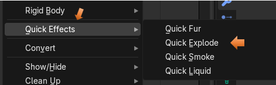
This is what shows up once you click on the Quick Explode.As you can see now you have a modifier in the panel on the right. But nothing seems to have changed with the cube in the viewport.
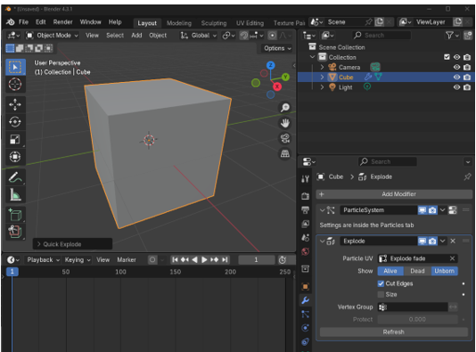
You won’t actually see the explosion until you put your mouse on that blue marker number 1 and drag it to the right on the timeline. Then you will see the box fall apart.
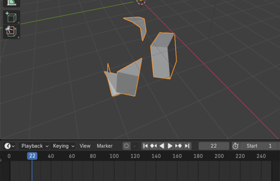
Drag the marker back to 0 and the box comes back together.
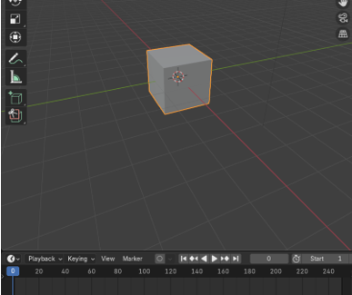
Go and Undo the History again to remove this modifier from the object.
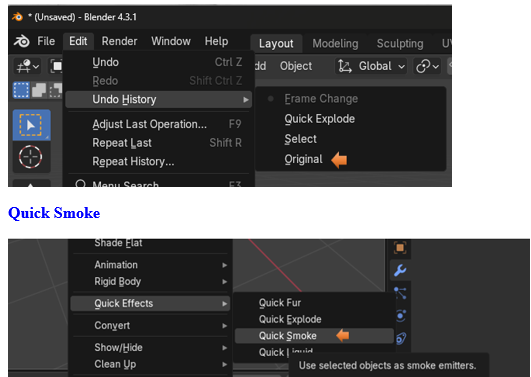
You can kind of see how things are a bit different than the way we did the other two effects. In fact, the options for this is inside of another tab all together (The Physics Tab) and it will tell you that if you look at the Modifier Panel.
This goes beyond the scope of this tutorial, but you do get a very basic general view of this effect.
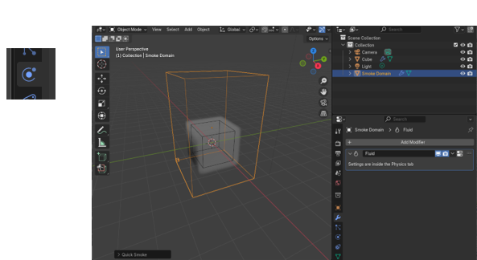
The Quick Liquid
This one is also an advanced system, and in order to create changes to it, you will need to go to the Physics tab in the property panel
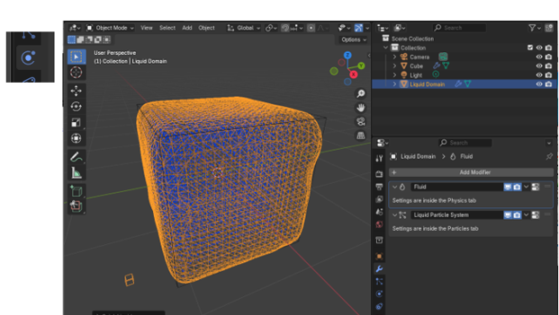
The Physics Panel
This is a quick look at the Physics Panel and where you will need to go to work with the smoke or liquid effects.
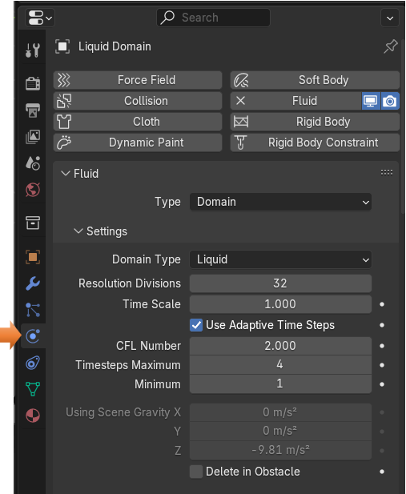
Well, I think that is quite enough to throw at you in one week, so next week we will start to tackle the second half of this sub menu.
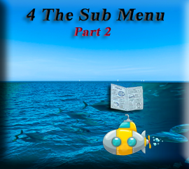